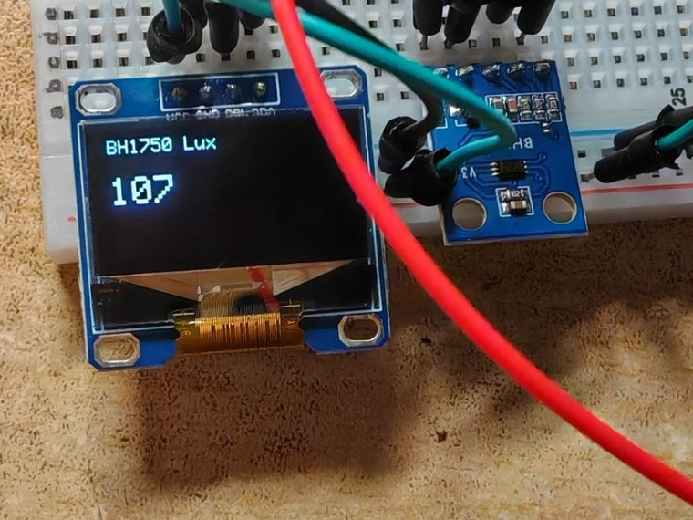
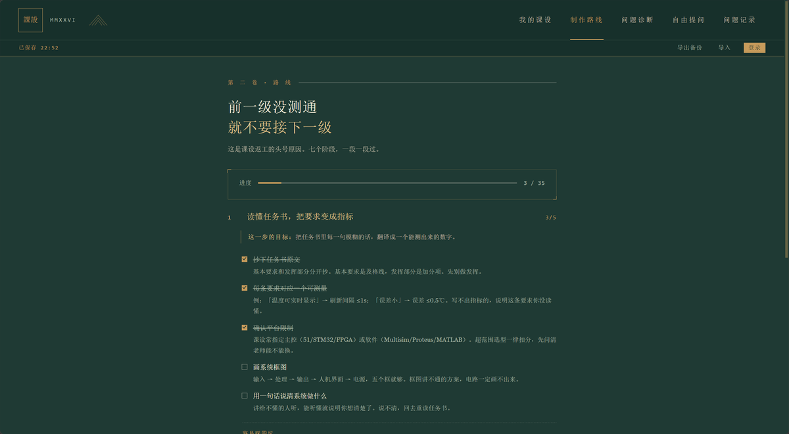
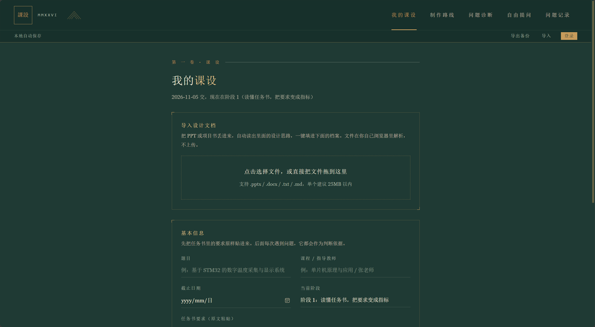
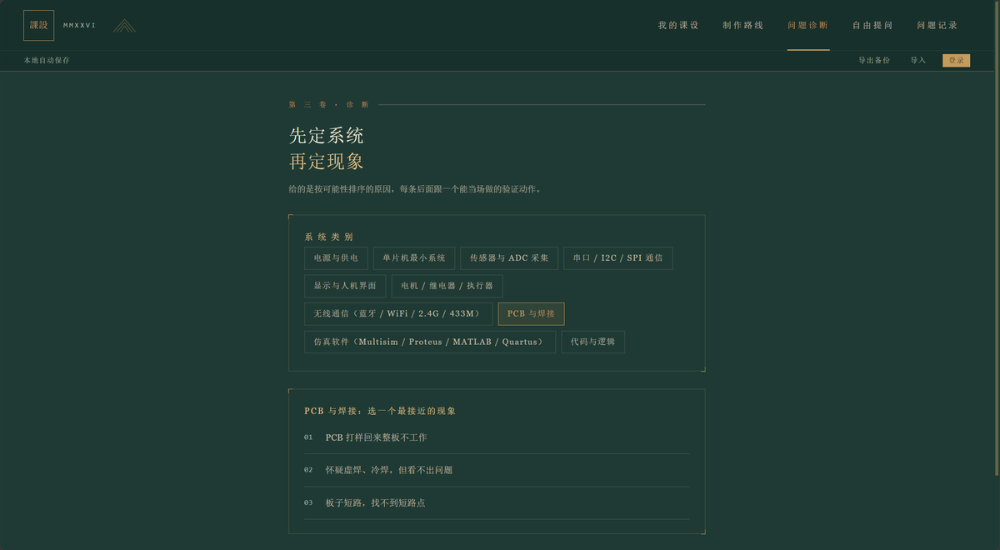
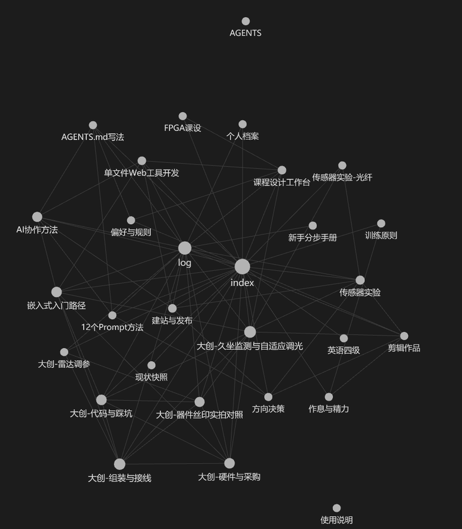

做 ESP32 传感器项目，也上线了一个 Web 工作台；
日常用 AI 协作，并把 AI 的每次错都记下来。
韩山师范学院 · 电子信息科学与技术 · 大三 · 广州
嵌入式硬件
自己接线、自己上电、自己查错。ESP32 加 24 GHz 毫米波雷达，六个阶段走到第五个：光照与屏幕两颗传感器一次扫通，桌面照度实测 107 lux，雷达底噪测了两轮。
02 →Web 应用交付
一个单文件工作台已上线运营：整页 214 KB、打开时不加载任何外部资源，断网也能用。接云数据库，看和填随便用，只有「问 AI」这一功能需要我审批——状态由数据库权限规则锁死，前端绕不过。
02 →AI 应用
用 AI 推进两个项目，累计审出 6 处会返工的错误，每条都记了日期、错在哪、后来怎么改。
03 →建体系
29 个 Markdown、3,933 行，在 Obsidian 里用双向链接串成一张图谱：Raw 只读、Wiki 独占写、Outputs 放成品，21 条协作规则写进 AGENTS.md。
03 →用一颗 24 GHz 毫米波雷达判断人是否坐在桌前，连续 45 分钟提醒，并按照度自动调台灯。
不用红外——红外测不到静止的人。六个阶段走到第五个，只剩灯带调光和整机联调。

图 1 · OLED 屏显：BH1750 实测照度 107 lux，2026-11-14
把「课程设计」拆成五卷固定流程：登记项目、照路线做、卡住查原因、做完留档。
单文件 214 KB、打开时不加载任何外部资源，断网也能用；接云数据库做登录，看和填随便用，「问 AI」这一功能需要我审批。代码主体由 AI 写，产品定义、7 阶段 35 点路线与验收标准是我定的。

图 2 · 阶段进度页：35 个检查点，勾一个小点，上一级自动收起

图 3 · 导入文件页

图 4 · 诊断页，按概率排序 10 类故障
AI 岗的门槛不是会不会用，是能不能判断它错在哪——并且把判断过程留下来。
先定义 五卷结构、7 阶段 35 点、10 类诊断表，都是我先定，AI 之后照着写代码。
让它干 代码主体交给 AI，我负责拆任务、卡边界、定验收标准。
自己验收 不信「看起来正常」。0/35 → 1/35、页面宽度必须等于屏幕宽度，靠具体数值抓出 1 像素级的错位。
知识系统硬指标
Markdown 文件
29
总行数
3,933
Wiki 结论页
24
协作规则
21
归档目录
12

图 5 · 29 个页面互相连接，中间两个节点是目录与流水；大创被拆成 6 个独立证据页，2026-11-19
图 6 · 本人，2026-11
参数不靠直觉，先找定义。雷达「灵敏度」越大越灵敏是错的，它是阈值，0 最灵敏、100 关闭该门。
不相信截图，只相信丝印。引脚表以板上丝印和官方编号为准，照模糊教程接会把 5 V 灌进输出脚。
「看起来正常」不算验收。进度 0/35 → 1/35、页面宽度 = 屏幕宽度，靠具体数值抓 bug。